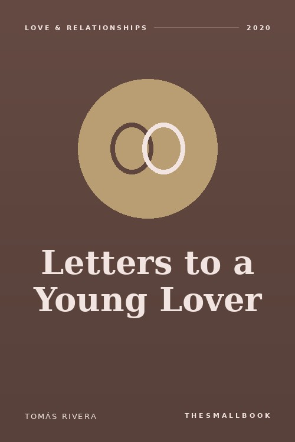

Library › Love & Relationships
Letters to a Young Lover - Summary & Key Lessons

A grandfather's letters on courtship, fidelity and tenderness, written for a grandson in his first serious love.
📖 OPEN THE FULL INTERACTIVE BREAKDOWN →🌐 Read it in Hindi, Hinglish, Gujarati, Tamil & 22 more languages, with audio.
💡 The Big Idea
When his grandson Marco, twenty two and baffled by modern dating, asked how he had known, Tomás Rivera answered in letters. Published with Marco's reply poems interleaved, the book covers attention, courtship as craft, jealousy, fidelity as freedom, quarrelling fairly, and the long tenderness of old love. Its argument is carried by tone: that romance is a practice of respect, and respect, in any decade, is recognisable and rare enough to be magnetic.
🧠 The 8 Key Lessons
Lesson 1: Attention Is the First Language of Love
Letters One to Three
The opening letters teach courtship as attention: remembering what she told you, arriving when you said, asking the second question. Tomás Rivera argues that in any era, including his grandson's app age, undivided attention is the scarcest gift and therefore the truest signal. Marco's generation, he writes, has made attention so rare that a young man who can give an hour of it, phone facedown, arrives like a prince from an older and better novel.
📖 Example: He tells of courting his wife in 1962 by learning her bus schedule to walk her home, then checks himself: the schedule is not the lesson. The lesson is that love studies its object. Marco's reply poem updates it: he memorised her library shifts, same study, new campus. Read the full example →
⚡ Do this: Give one hour of facedown phone attention this week to the person you love or hope to. Ask the second question at least twice.
Lesson 2: Fidelity Is Freedom From the Marketplace
Letters Seven to Nine
Against the idea of fidelity as restriction, the grandfather argues it is liberation: the man who has chosen stops spending his life evaluating alternatives and starts spending it deepening one thing. He is no innocent; the letters name temptation honestly and treat it as weather, not destiny. The discipline he prescribes is mostly architectural: do not build rooms you will have to lie about entering, and let your chosen person hear your admiration so often that flattery from strangers loses its market.
📖 Example: He describes a colleague at the port who kept every option open for thirty years and arrived at retirement with a famous address book and an empty house. Options, the letter concludes, are a currency that devalues to zero if never spent. Marco's generation calls it the paradox of the apps; his grandfather called it the harbour with no ship. Read the full example →
⚡ Do this: Close one option channel this week that exists only to keep you marketable. Spend the recovered attention on the person you have chosen.
Lesson 3: Quarrel Like People Who Will Wake Up Together
Letters Ten to Twelve
The quarrelling letters are the book's most practical: never argue to win, argue to understand; no verdicts about character, only evidence about events; the words always and never are banned as perjury; and every quarrel ends with the physical reconnection, tea, a walk, the hand, that tells the body the bond survived. He adds his marriage's strangest rule, proven across sixty years: you may be angry at me, but you may not be cold to me. Heat can be answered. Ice only spreads.
📖 Example: He recounts the worst quarrel of 1974, over money and his mother in law's visit, resolved not by verdict but by his wife's sentence: we are on the same side of this problem by morning. They were, because the rule forbade sleeping as opponents. The sentence has since been adopted, Marco reports, by at least one grandson's household. Read the full example →
⚡ Do this: Adopt the same-side rule tonight: no quarrel survives sleep unresolved at least to the point of reconnection. Ban always and never for a month.
Lesson 4: Admiration Must Be Said at Home
Letters Four to Six
The middle letters argue that most affairs of the heart begin as affairs of being admired elsewhere. Tomás Rivera's prescription is almost administrative: let your person hear your admiration in specifics, weekly, so that no colleague or stranger is the first to tell them they are remarkable. He is equally stern about receiving: the beloved who deflects every compliment is refusing a currency the household runs on. Courtship, in his accounting, is the permanent department of admiration, never outsourced, never closed.
📖 Example: He describes noticing, in his seventies, that a neighbour's widow blossomed visibly under a new friend's attention, and auditing his own house the same evening. His wife received, he writes, a list she made him repeat when she was dying. Say it at home is the letter's title in draft, and Marco's generation has tattooed worse sentences. Read the full example →
⚡ Do this: Deliver one specific admiration to your person today: not you look nice, but the observed detail and its effect on you. Repeat weekly.
Lesson 5: The Second Question Is Where Love Lives
Letters One to Three
Anyone can ask how was your day. The letters teach the second question: what was the hardest part, what are you not saying about it, what would help. Tomás Rivera calls the second question the doorway between company and intimacy, and notes that it cannot be faked, because it requires remembering the answer tomorrow. Marco's generation, drowning in messages and starving for witness, is told that this is the entire technology: follow up, in person, on the record of yesterday's answer.
📖 Example: The grandfather recounts asking his wife about a difficult sister for forty years, the answer evolving with their lives, until at the end the question itself had become a place they lived. Marco's reply describes asking his girlfriend the second question for a month and being asked, in return, what had changed. Nothing had, except attention, which was everything. Read the full example →
⚡ Do this: Ask one second question tonight and remember the answer tomorrow, aloud. That audible remembering is the love letter.
Lesson 6: Boredom Is a Season, Not a Verdict
Letters Thirteen to Fifteen
The later letters take up the fear every long love meets: the season where the beloved seems ordinary and the heart goes quiet. Tomás Rivera treats it as weather his sixty years met repeatedly, with a farmer's calm: seasons are not verdicts, and the crop is tended through them, not evaluated in them. His remedies are unfashionable: shared work, novelty administered together, and the memory deliberately revisited, their own early letters reread aloud, until the climate changes, as it always had.
📖 Example: He tells of the winter of 1981, work gone, money short, love apparently with it, and of his wife reading their courtship letters aloud by the stove until both were laughing and then not laughing. The letters did not fix the money. They fixed the interpretation: this is a winter, and we have survived winters as a genre. Read the full example →
⚡ Do this: In your current flat season, reread one early message from your person aloud together before pronouncing any verdicts.
Lesson 7: On Seeing Others: The Weather Report
Letters Seven to Nine
The grandfather refuses to pretend that married eyes go blind. Attraction to others is weather; what matters is the architecture it meets. His rules are practical: no private channels you would hide, no complaints about your spouse as an opening bid, and the weather reported at home when it matters, because secrecy is the greenhouse in which weather becomes climate. Marco's letters answer with the digital translation, and the correspondence across seventy years agrees on the load bearing wall: transparency.
📖 Example: He recounts a friendship in the port years that warmed beyond its brief and how he ended it: by telling his wife it existed, which cooled it to its proper temperature within a week. Daylight, he writes, is the cheapest fidelity device ever manufactured, and the one his grandson's generation keeps trying to replace with passwords. Read the full example →
⚡ Do this: Bring one weather report home this week: an attraction, a friendship's temperature, mentioned in daylight before it needs confessing.
Lesson 8: The Last Letters: Tenderness as the Final Form
Letters Sixteen to Eighteen
The book closes with letters written after his wife's death, addressed now to Marco alone: about grief as love with nowhere to sit, and about tenderness as passion's final and best form. He describes their last years, the medicine schedules, the hand held through hospital nights, and argues that what young lovers call chemistry is only the overture. The full work is tenderness: desire educated by decades of care until it can speak in a held hand at a frequency the young cannot yet hear.
📖 Example: The last letter describes holding her hand in the hospital and understanding that he was not experiencing the remainder of their love but its concentrate. Marco's closing poem answers that he has begun, at twenty three, to practice for a concentrate he hopes is sixty years away. Readers tend to finish the book in silence, which the publisher has learned to warn book clubs about. Read the full example →
⚡ Do this: Practise tenderness today at the concentrate's frequency: one unhurried, fully attentive act of care for your person, young or old.
✅ 5-Step Action Plan
- One hour of facedown phone attention weekly; ask second questions.
- Close one option channel; redirect the attention to your chosen person.
- Ban always and never for a month; argue events, not character.
- End every quarrel with reconnection before sleep.
- Study your person: their schedule, worries and small preferences, this week.
- Write one actual letter to someone you love this month.
- Let admiration be said aloud at home until strangers' flattery has no market.
⚠️ When This Doesn't Work
The letters reflect one man's era, faith and temperament, offered as inheritance rather than instruction. Readers will translate, argue and adapt, which the grandson's interleaved replies model from the start.
💀 The Graveyard Proves It
💬 Best Quotes from Letters to a Young Lover
- “Courtship is not a performance. It is a promise, rehearsed.”
- “Jealousy is not proof of love. It is proof of fear, and fear is a poor architect.”
- “Tenderness is what passion becomes when it grows up and stays.”
Interactive version: mark lessons as read, listen in your language, share quote cards.